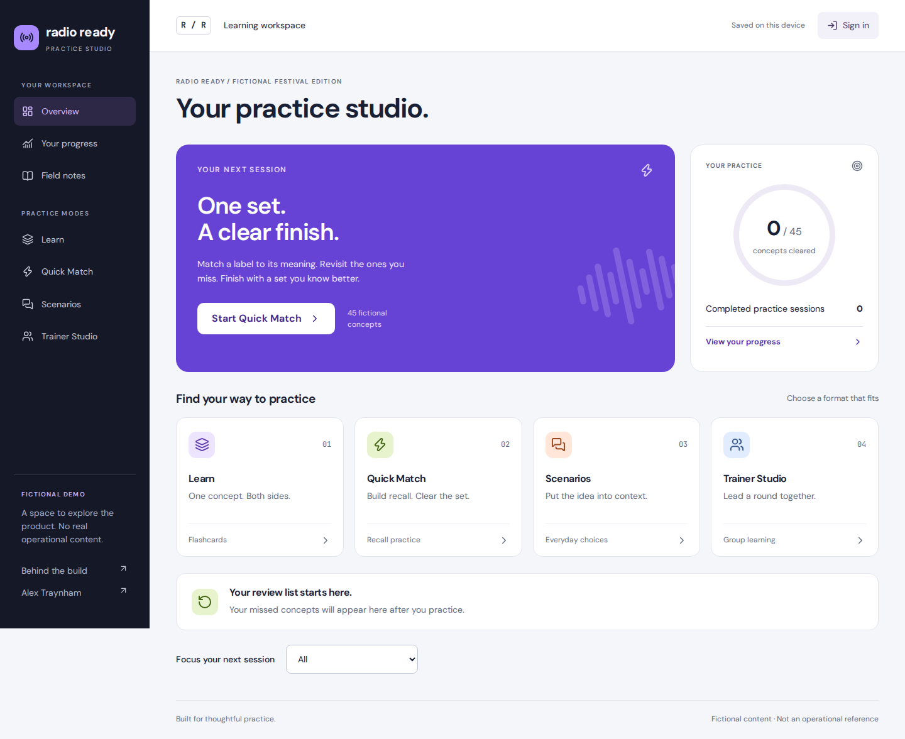

Product design · Learning experience · AI-assisted development
Practice with
a purpose.
Radio Ready turns a frontline learning idea into physical flashcards and an interactive digital product.
Public reconstruction: Every example shown here is newly invented festival content. No original operational material is reproduced. The independent application is built and locally tested; public hosting and its custom domain are pending.

Make unfamiliar information easier to practice.
In attractions training, I saw an opportunity to turn memorization into something more interactive. I wanted a trainer to be able to prompt recall, reveal an answer, and focus the next round on what needed more attention.
I chose cards because a prompt and its meaning create a simple interaction that works individually or in a group. The digital version extends that structure into matching, explained scenarios, and facilitated team rounds.
A useful session needs a finish line.
During a supervised tryout, the matching activity kept returning to material without a satisfying ending. I used that observation to define a finite session: skip previously cleared concepts, retry missed ones, show what remains, and finish with a clear result.
Clarity before decoration
I rejected overly branded card designs, then refined the physical deck toward a dark palette, restrained borders, and small celestial details outside the reading area. The information remained the main focus.
Different modes, clear jobs
Flashcards introduce a concept. Matching prompts recall. Scenarios add context. Trainer Studio supports a shared discussion, answer reveals, and manual team scoring.
The rebuilt interface uses a compact navigation rail, strong type hierarchy, distinct mode colors, keyboard controls, and reduced-motion support. Self-review and one correct answer are not labeled as proof of competence.
The borders aligned. The answers did not.
My supervising lead and I printed a front-and-back test sheet. The cut lines aligned, but the meanings in the outside columns were reversed after duplex printing. I directed a correction across the answer pages: swap the outside columns while keeping the center column in place.
A design can look correct on screen and still fail in someone's hands.
The test proved why physical verification matters. The correction was applied across the deck; a complete post-correction print check is not documented in this case study.
A real backend with a deliberate public boundary.
The independent rebuild uses Next.js and TypeScript, Better Auth for account sessions, and a libSQL database. It includes server-side role and ownership checks, persistent practice sessions, versioned content, and a separate publishing reviewer. Guest progress stays in the browser.
Every public example was authored from scratch. Internal material would require a separate company-approved environment, identity system, database, and content owner. A password on a personal site would not meet that requirement.
The source and deployment documentation are independent of ChatGPT Sites. Cloudflare Workers is the selected hosting platform. Account access and production database setup are pending, so this page does not claim a live independent application deployment or production database.
Show the decisions. Be honest about the results.
I identified the need, chose the formats, directed visual revisions, evaluated generated work, and used feedback to make specific corrections. AI tools assisted with code, layouts, production files, and testing.
The rebuilt learning flows and backend permissions have automated local checks. Browser checks cover the four modes, saved guest progress, desktop/mobile layouts, and automated accessibility rules. These demonstrate implemented behavior, not improved learning outcomes.
I have not measured improved retention, reduced training time, or broad adoption. With appropriate permission, the next evaluation would examine session completion, repeat misses, and delayed recall. Practice scores alone would not establish operational competence.
Operational details, identities, and original materials have been excluded. Displayed content is fictional and recreated for public presentation. No employer endorsement is implied.